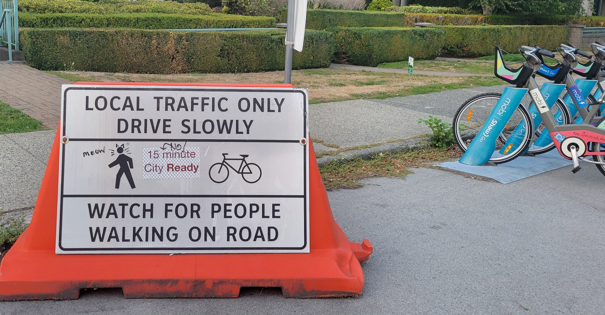
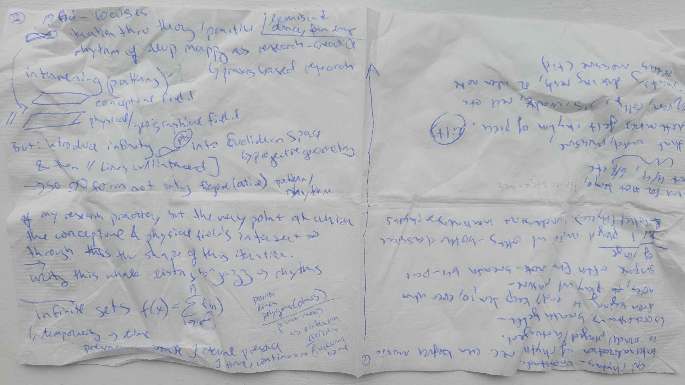
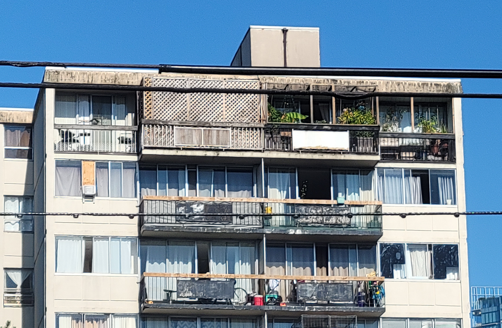
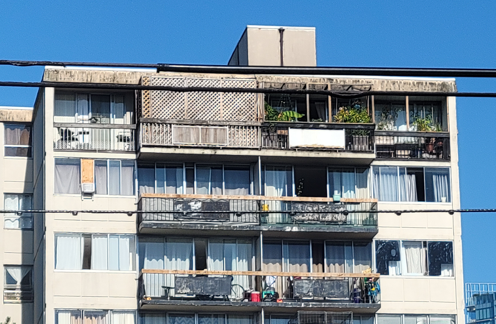
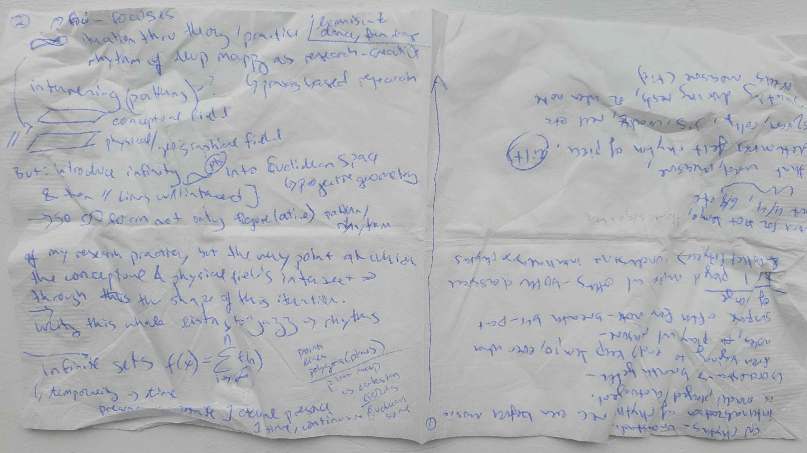
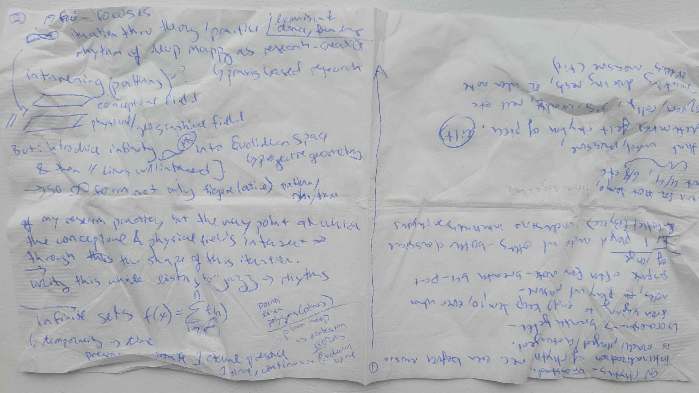

GRANVILLE BRIDGE
Pressing my chest against the Granville Bridge I feel at once its trembling vibration and my own heart’s rapid beating. I embody a sonic superposition: vibrational waves overlap; interfere; combine. The rhythm of their resulting wave marks a pattern of interference, also called a diffraction pattern. Through visceral encounter, I become entangled with the infrastructure which, heretofore, I had approached only as an instrument from whose abstracting vantage I could conduct rhythmanalysis of the field below.
begin-from-bottom
to enlarge individual image for viewing, right click and "open image in new tab"
also lions gate (water processing views), burrard, cambie, ironworker - why i like granville etc.
de Certeau, Michel. The Practice of Everyday Life. Translated by Steven Rendall. Berkeley: University of California Press, 1984.
about as seen from the window/balcony - rhythmanalysis and balcony imaginaries
In January 2023 I first became aware of the Amazon Van’s backup sound. It’s unlike any vehicle beepI’ve ever heard. Short and aggressive, it's like the grunt of a rooting pig. It’s so distinctive that no matter how far away the van and faint the sound, my ears will sense it and immediately associate sound to source. I involuntarily think of Amazon like 6 times a day now.
maybe about other sounds - rhythms - that are intermittent even but commonplace. how sirens faded for a while and i realized it was because of construction.
add other signs (city and drift)
SIGNS OF PROTEST
Deep mapping (including practicing rhythmanalysis and reading Karen Barad through my praxis) has honed my ability to recognize patterns of similarity and difference, or marks of interference. Lately I’ve been lured by the drift of sticker-signs and graffiti-tags around the city. Among other variously elusive signs, I've been tracing these `15 minute City Ready` stickers that I began noticing in March around the Vancouver greenway, a stretch of old railroad converted into a designated bike path. Over the course of the spring more stickers appeared, pasted over DO NOT ENTER EXCEPT BICYCLES signs and those yellow/black striped hazard markers. At the same time as the stickers began proliferating east, west, and even across the bridge into downtown, they also began being scratched off. Reapplication, however, was swift. Then I sighted something different: at first one then two sites, scrawled in blue sharpie over `15 minute City Ready` was the declaration RESIST.
[photo evidence captured between march and august 2023 on cellphone by Q, ordered chronologically]
But resist what? The `15 minute City Ready` stickers are actually in protest of the ‘15 minute city’––the decal’s chain-link background representing enforced limited mobility. The location and surface of the stickers placement is therefore significant to making matter the intended message. The signification of protest comes to matter through the stickers’ material-semiotic interference with (infrastructural) boundary demarcations. City signs become palimpsests––sites of super/im/position signaling contested urbanisms.
These questions are the beginning of something. Although they require iterative re-writing I include them here to mark the opening of an ongoing inquiry. A related set of questions that was inspired by my navigations and encounters with `15 minute City Ready` emerged while thinking through diffractive mapping spatial analysis. How are empirics made legible as data by the apparatuses that produce them? How are technoscientific and affective orientations to ‘what counts as data’ co-constitutive of an empirical account of the city?

just before sundown every evening thousands of crows fly back across vancouver to the neighboring city of burnaby where they roost around an office park, macdonalds, costco, and train tracks. they started doing this in the 70s.
My first view of Vancouver. The morning after I arrived, August 7th, I walked from 30th
all the way down to the shore. I knew nothing of this place before coming here. I'd googled pictures of the
city once back when I was deciding which offer to
accept. Each
path led, in my mind, to a divergent trajectory. Who was I going to become? The pandemic began during the
spring of my sophomore year of undergrad. Within 2 weeks my life radically altered and I decided to graduate
the next year and go somewhere new. I spent a year isolated in rural Maine. It was there that I began
walking in the woods, practicing something I called isolation
psychogeography. Under the mentorship of my Intro to GIS teacher, the best teacher I've ever known,
I explored critical and creative cartographies for my honors thesis. My undergraduate studies were in
physical geography and geographic information science. I chose geography because, as seems to be common
among geography undergrads in the states, I had an exceptional AP Human Geography teacher in UBC was the
only MA program I applied to and though my final decision was on impulse, I think I felt the lure of
openness to define my own project according to a mix of interests. And mentorship by someone who's skills
and knowledge spanned a breadth of fields. Looking back on my research statement submitted this time two
years ago (January 2021), my general aim remains the same:
I am a renaissance student whose skills in the arts and sciences unite in Geographic Information
Science. My research interests lie in GeoVisualization, Critical Cartography, and the Geohumanities. I
value both qualitative and quantitative methodologies, and am especially drawn to the ways both
practices supplement each other. The research streams Digital Geographies, Geospatial Analysis, GIS and
Knowledge, Ideas, Practices are both of interest to me for I seek the technical skills to map
transdisciplinary patterns, not just conceptualize them. While my undergraduate background is in the
physical sciences, I am fundamentally a creative whose passion lies with critical examinations of
people, their interaction with each other, and response to the natural and built environment.
i've inhabited this place for a year and a half now. i drove to vancouver from the other side of the
continent via somewhere in the middle of the united states. for the first time in my life i left a familiar
place without a plan. i had no map save a Rand McNally Atlas of U.S. Road Atlas which i am embarrassed to
say i forsook in favor of googles maps. even then, however, my journey unfolded in ways i never could have
imagined and so slowly, i became comfortable with being uncomfortable. with not knowing what lies ahead. so
much can happen between departure and destination. yet when the goal of a journey is the destination alone,
getting lost is experienced as an inconvenience. therefore, maps are used to plot a path from A to B,
departure to destination. with digital maps such as google maps, GPS will geolocate you in cartesian space
so long as you remain in range of satellite reception. follow the directions spoken in synthesized sentences
and you won't ever have to feel disoriented. you can't get lost. [recalculating...] you can't get lost
unless you exit the navigation,
discard the map,
and reorient your attention to the space between departure and
destination.
my journey to vancouver, into graduate school, and through this project until now has been a process of
disoriented discovery. everything between departure and destination shapes where you end up. because deep
mapping is process oriented research, so much of what went into articulating the negative spaces assembled
above risks being relegated itself to negative space.to intentionally disorient oneself, to get lost as
method, to slow down, to be guided by serendipity, to follow non-linear trajectories, to start something and
start over. and over. and over and then claim that all this not only informs that which has coalesced as
creative output but actually constitutes the research product is my commitment.
I lived in Dunbar for 7 months after I moved to vancouver. Dunbar is a neighborhood farthest west,
separated from campus only by Pacific Spirit Park. To commute into the department my housemate and I
would bike a few blocks to the park then through the woods until we came out at campus luxury
residences. We'd ride the road, rounding two rotaries, then up one last slope to the main mall. Waving
goodbye we'd coast the final way to our respective buildings. Where you live in the city matters for how
you view it. It was a wealthy area of single families and dream homes with no architectural consistency.
I lived in a tiny house from the 1920s with blackberries in the front and garden beds in the back. Five
other people lived there, one which made it hell. Dunbar was far from downtown but close to the quieter
beaches so I began going there after classes instead of home.
Early April 2022, my friend and I are walking along a familiar street and see, resting amongst the
regular fairy pebbles and kitsch that decorate the bases of so many chestnut trees in this neighborhood, a
box of chalk. It’s an open-ended invitation to which we respond by pausing to draw colorful forms on the
sidewalk. “Very affirming” comments a passerby as they smile and skirt around us. In this moment, we have
transformed an otherwise pedestrian space into a place of interest, using what mediums surround us to
engage with the city and its passersby.
days later we walked the same sidewalk and saw the weathered impression dissolving back to
abstraction. i wonder how many soles picked up pieces of chalk and how far our art walked with them.
Two months after I arrived in vancouver I began classes and TAing the undergraduate cartography course.
My role as TA involved facilitating 3 lab sessions a week during which I'd introduce the assignment,
demonstrate the use of Adobe Illustrator and ArcGIS, and troubleshoot questions. I also marked all 60
students' weekly lab submissions, the majority of which were maps. The first lab assignment was to make
a map of downtown Vancouver by tracing a screenshot from google maps. The rubric required land and water
be differentiated by contour and color, a few 'well known' streets, and 5 points of interest which were
given. The resulting map no practical use beyond an image. A tourist could not use it for navigation
without referring to google maps. Which made me wonder whether these maps of the city reflected
students' lived experience? And if not, what did they render? Or, rather, render invisible?
I, like many colleagues and undergraduate students, had just moved here. Overwhelm dealing with
household drama and academic demoralization it took me 6 months before I ventured downtown. I marked 60
maps of a place I'd never been. They were arrangements of points, lines, and polygons for which I had no
contextual mental map. By my third term TAing the class I'd walked nearly every street downtown. Before
the first lab I invited students to spend 5 minutes sketching their mental map of vancouver. Nearly all
were attempts at reproducing a memorized aerial contour. Areas of inhabitation or commute were more
articulated/detailed. I think this is important somehow - the practice of connecting (with) your mental
map before abstracting a place you know from on-the-ground navigation. It helps reveal what flat maps
relegate to negative space. The required points of attraction I still haven't been to - and probably
never will. They aren't what interest me.
Walking around false creek (so called because it's an inlet of water dug into the land) there are
unexpected
wonders like a stone labyrinth and chairs that rotate. things like these are what I'd put on a
tourist
attraction map.
Nothing is where I left it. I get up for a walk or eat or rest and when I return the words are there but I've forgotten what they meant. Is my thesis just writing about writing a thesis? Or doing fieldwork? I know I thought it all meant something yesterday. I felt it, at least. I had six ideas before noon and but then I read the last chapter of this book and now I'm not so sure what matters. Is it all very simple and elegantly connected from the start? Or is it a tangled snarl of threads which no amount of good writing can unravel. Topology shifts with something so simple as a bikeride along an unfamiliar route. The city and my framework rearranges ever so slightly, coheres, connects back to something last visited a year ago. My working memory can hold no more than four things at a time which makes writing a thesis where everything is connected and also layered and happening all at once very challenging. I don't think one sentence at a time. I feel ideas and their connections, wake up with words in my mouth, and then iterate through phrasings until I land on an arrangement of words and punctuation that best approximates the feeling. And then I write around this grain until a pearl of something is said. I'm trying to practice writing around nothing (yet) - not waiting for the grains to start writing but just saying whatever's on my mind when I feel stuck and seeing if it goes anywhere. It's all the field - every feeling a world in the process of becoming.
3 nights now I've woken 3 hours after falling asleep, the conceptual debris which all day circled my mind in an undifferentiatable cloud suddenly cohered into orbits such that fully formed sentences carry me from unconscious to consciousness. delta brainwaves.
I am a beam of light
intervening patterns
interfering constructively
encountering disruption
detour
I find my way around
Diffraction in essence
is resilience
bending
becoming
transformation or an
other way of being
I begin writing for my thesis in a place I come to often - usually late in the morning with
a smoke and a
couple hours uninterrupted thinking behind me. From where I stand now I see at once the
hazy outline of mountains above downtown's quiet skyscrapers, the subway construction at
Broadway & Cambie
that exposes the guts of the city while slowing traffic and reconfiguring pedestrian flows,
and, directly below
me, people walking rolling and riding about their day.
I like places that offer me perspective, like this spot, or the rooftop parkade of the
supermarket two blocks
from here or Granville Bridge. Places above the ground offer an alternate framing of what
goes on in the city
- the field in which I practice deep mapping. The sensorium is less overwhelming up here.
Less abrasive. Bodily
distanced, I feel less. Vertically distanced, I see more. The places I have Been fall into
some geospatial
context. (The surest method of developing spatial awareness, however, is getting lost on the
ground.) From such
a vantage, the city and my thesis are more
easily theorized. I'll take out my notebook or my voice recorder and let the ideas flow.
Later I'll write
these up and push them to FIELD_NOTES. I say. Today is the first time I write in
this place in this place. (Well, I just moved a few feet to a
stone bench to let a skater boy eat his dinner sitting perched on the very edge. I have
stood there for 2 hours
after all. He's playing Bad Bunny which isn't this entry's mood so I'll wrap up this entry
for today.) Tl;dr:
Ive written here so many times but with nothing to show (you). Today I write directly on my
laptop as
the sun sets against a thousand windows and the chill of a second fall has me wondering
where all the time
went.
Friday September 30th 2022
450 days of being here
monday night runners
writelab
haha art and science thing
yukon
broadway city hall detour maps
before presentation at aag
intersections of planes, of epistemiologies, of life things, of the two motions of a leminscate intersecting in the middle

Notes on rhythm and intersecting planes which came to me while sitting listening to live jazz in an open
studio one saturday with my friend.
Thinking about rhythmanalysis before I'd even heard of the book.


.jpg)


 



 
